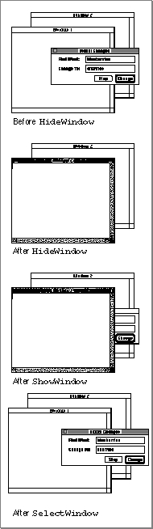

Legacy Document
Important: The information in this document is obsolete and should not be used for new development.
Important: The information in this document is obsolete and should not be used for new development.


Hiding and Showing a Window
Whenever the user clicks a window's close box, you remove the window from the screen. Sometimes, however, you might find it's more efficient to merely hide the window, instead of removing its data structures.If your application includes a Find modeless dialog box that searches for a string, for example, you might want to keep the structures in memory as long as the user is working. When the user closes the dialog box by clicking the close box, you simply hide the window by calling the
HideWindowprocedure. The next time the user chooses the Find command, your dialog box window is already available, in the same location and with the same text selected as when it was last used.To reverse the
HideWindowprocedure, you must call bothShowWindow, which makes the window visible, andSelectWindow, which makes it the active window. Figure 4-22 illustrates how the three procedures affect the window's status on the screen.Figure 4-22 The cumulative effects of
HideWindow,ShowWindow, andSelectWindow
The application-defined procedure for closing a window--
DoCloseCmd, described
on page 4-54--hides the Find and Spell Check dialog box windows when the
user closes them. Listing 4-18 illustrates a sample application-defined procedure,DoShowModelessFindDialogBox, for redisplaying the Find dialog box when the
user next chooses the Find command.Listing 4-18 Showing a hidden dialog box
PROCEDURE DoShowModelessFindDialogBox; BEGIN IF gFindDialog = NIL THEN {no Find dialog box exists yet} BEGIN {create Find dialog box} gFindDialog := GetNewDialog(rFindModelessDialog, NIL, Pointer(-1)); IF gFindDialog = NIL THEN {creation failed} Exit(DoShowModelessFindDialogBox); {exit} {store value that identifies dbox in window refCon field} SetWRefCon(gFindDialog, LongInt(kMyFindModelessDialog)) ShowWindow(gFindDialog); {make dialog box visible} END ELSE {dialog box already exists} BEGIN ShowWindow(gFindDialog); {make it visible} SelectWindow(gFindDialog); {select it} END; END;TheDoShowModelessFindDialogBoxprocedure first checks whether the Find
dialog box already exists. If it doesn't, thenDoShowModelessFindDialogBoxcreates a new dialog box through the Dialog Manager. It stores the constant that represents
the Find dialog box in therefConfield of the new window record, makes the window visible, and draws the dialog box contents. If the Find dialog box already exists,DoShowModelessFindDialogBoxmakes the dialog box window visible and selects it. When the Window Manager then generates an activate event, the application calls its own procedure to draw the contents.